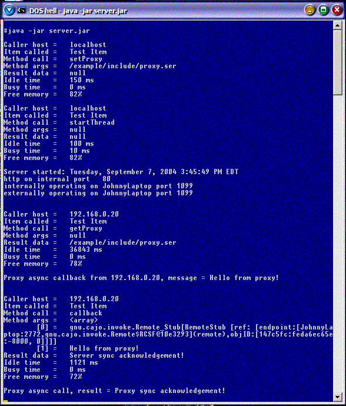

|
|
 |
|
Exploring the cajo framework
|
|
 |
This page will help to get you up and running as quickly as possible. Once
you understand its basic components, the possibilities become truly
limitless.
The tutorial will start by describing the directory
structure project and its components. Next it will move on to
building and launching the
example server, and their related options. It will conclude by describing
the ways of connecting to the server. This should
provide a fairly complete introduction to the overall use of the framework.
Note: to best follow along, please download and unzip the
project source code.
|
|
|
|
|
The project is organised into the following directories:
/cajo // install directory
|- /gnu // GNU root namespace
|
|-- /cajo // project namespace
|--- /invoke // architecture core
|--- /utils // framework of tools
|---- /extra // for later study...
|
|- /example // project example
|-- /include // proxy resource repository
|-- /gui // proxy graphical widgets
|
|- /docs // documentation collection
The cajo install
directory contains several important files, all of these will be covered in
the course of this tutorial. For now, the most important file is either
doc.bat, or build.xml. Invoking either the batch file, or the doc Ant target,
will scan the project source, and create highly detailed javadoc hypertext
documents in the docs subdirectory. This will be a very valuable
resource in your development activities. Nearly half of the source code is
documentation comments! You can view this helpful resource by opening the
file docs/index.html with your favourite browser.
The gnu/cajo/invoke
directory houses the three core classes of this framework's architecture.
Its files are described at length in the javadoc pages. For now suffice it
to say that it defines the standard interface through which all cajo objects
communicate.
The gnu/cajo/utils
directory applies the invoke package to create the framework. Likewise, these
files are covered in detail in the javadoc pages. For now it can be summarised
as providing a collection of classes used in the creation of servers.
The cajo/example directory contains
the four Java classes comprising the sample server. The file Main.java is
the server application itself. The file TestItem is an item, meaning a
server-side resource object, which is accessible to remote applications. The
file TestProxy is a proxy, meaning a mobile functional object, which is sent
to remote clients, and communicates back to its item. Server objects can be
made that do not use proxies, it is included to demonstrate how to make one,
and what it does. Finally there is the file Builder.java. Strictly speaking
the example could have been made without this class also, but it is here to
demonstrate the process of configuring proxies at compile time, rather than
runtime. It's a little extra work, but it can make the proxies a lot
smaller, simpler, and more secure.
The cajo/example/include
directory contains miscellaneous data resources used by the proxy. This
includes things like properties tables for multiple language support,
graphical bitmaps. Essentially it is any non-Java files required for
operation of the proxy at its remote host. It is put in its own directory
so that it can be included into the proxy's jar file with a simple *.*
option.
The cajo/example/gui directory
contains a small collection of graphical widgets used by the proxy to
create its user interface on hosting clients. They are outside the scope
of this project as a proxy is free to use the AWT, or Swing, or anything
else. Please don't think this is the graphical toolkit you have to use, it
is here only for the purposes of this example, and doesn't even merit more
detailed examination.
The cajo/docs directory, as mentioned previously, is
where the auto-generated documentation goes. To save space, initially it
does not exist, until you run the doc build.
Note: there is also a directory
gnu/cajo/utils/extra. It contains powerful applications of the framework,
for later study. Its
description will be set aside at this time, as it is not used by the
example.
|
|
|
|
There are four distinct ways to build the example, represented by the four
batch files: make1, make2, make3, and make4; and their corresponding targets
in the build.xml ant script. Each builds the server with identical
functionality, however, packaged in fundamentally different ways.
The make1 creates the server
in one monolithic jar file. Everything is contained inside it,
the server itself, the test item, the test proxy, and even a client applet,
which allows browsers to host the proxy. This file, and the security.policy
file are all that is needed to deploy the server. All servers use the same
policy file by default, so a deployment directory could consist of many
server jars, and a single policy file. This is an important part of the
paradigm; to allow complex functionality to be modularised into multiple
Virtual Machines seamlessly working together. Note: If you should need
separate policy files for each server, simply place each server jar and its
associated policy into separate directories.
The make2 creates the
server in two files: server.jar and client.jar. The
client.jar is a stand-alone generic client application, in addition, it is
also a generic proxy hosting Applet. Deployment now consists of the
server jar, the client jar, and the policy file. All servers built this way
reference the same client jar, in the same way as they all reference the same
policy file. A stand-alone client not only reduces the server jar file size,
which can be helpful if there are many servers in the same directory, it is
also very useful in its own right. Using the standard
client is a topic of its own, and as such gets its own page.
The make3 creates the server
as three files: server.jar, client.jar, and proxy.jar.
Now deployment consists of four files, the three jars, and the policy file.
The reason to use make3, is if you want to take advantage of the 'hot
plugging' capability of the framework. This means you can modify the
proxy, or proxies, recompile their jar file(s), and overwrite the existing
proxy jars, all while the server is still running! All subsequent
clients will receive the updated functionality automatically, and the server
need not be shut down.
The make4 creates
the server as four files: server.jar, client.jar, proxy.jar,
and cajo.jar. The cajo.jar file is the standard binary library for the
cajo project. By using this jar file, all of the standard functionality is
stored in one central repository. This not only reduces the size of the
server jar files, but permits library updates without affecting the
server files. This is the most common method of deployment.
As you would expect, there is a fifth batch file, and default ant build
target; called library. It compiles the project
source code and creates the standard cajo.jar library image. Its purpose is
to provide the framework functionality to multi-jar classpaths, used by the
majority of applications.
|
|
|
|
Once you have built the example, launching it can be as simple as executing
the following command:
java -jar server.jar
This will start the server using its default settings:
- client and proxy code delivery on TCP port 80
- server item communication on TCP port 1099
- hostname is identical both inside and outside subnet
- default server network interface is being used
- the server port is the same both inside and outside the subnet
This should suffice for many users, however these five assumptions can
be overridden, as command line arguments. The options above progress from
most likely to need overriding, to least.
1. Typically the first problem hit by most users is that port 80 is
not available. This can be for a variety of reasons; there is already an http
server running on the box, or you are using a *nix system and you are not
root, in any case, you are forced to select another port. Fortunately this
is the first command argument. In this case, you will have to do something
like this:
java -jar server.jar 8080
This will start the http service for the client and proxy code on port 8080.
The only real impact is that the port must now be explicitly specified by
the client when connecting to the server, as it is no longer default. This
detail will be covered in the next section,
connecting.
2. Often the next problem hit is that port 1099 is not available. Typically
this is because a central rmiregistry is running on the machine. By default,
each cajo server uses its own rmiregistry, operating on the same port as the
interface to its items. In any case, another port must be selected:
java -jar server.jar 8080 1234
This means that clients connect to this server on port 1234. Note:
the order and precedence of the arguments is required, meaning that if you
want to specify the server port, you must also specify the http port. (yes,
arguments could be handled in a more sophisticated fashion, but this is only
an example program)
3. The next most common problem is that your server is behind a NAT router.
This happens, for example, when you want to share a single connection to the
internet. Essentially, the NAT router is giving you a 'fake' IP
address valid only inside the subnet. It translates the addresses for you,
and everyone else sharing the connection, to the actual network address.
This means you need to know your outside IP address. There are simple
programs to tell you your actual IP address. A very easy method to find
it is to just visit ipchicken.
Another highly recommended option, if you are going to be serving a lot, is
to get a domain name. This is not nearly as difficult or expensive as it
sounds. If you are willing to share one, it is very easy to get one for
free. One handy place to do this is
dyndns. There you can register a name, something like
yourhost.dyndns.com, and they even have a variety of utilities you can run
to make sure that name always resolves to your host, even if your ISP is
constantly changing your address! If you want to get really fancy,
you can always buy your own registered domain name. Anyway, now you will have
a command line that looks something like this:
java -jar server.jar 8080 1234 yourhost.dyndns.com
-or-
java -jar server.jar 8080 1234 123.123.123.123
Now clients will correctly connect to you on your actual address, not the
internal one that the NAT router gave your host.
4. Next, lets assume your computer has two network adapters; a wired
connection to your LAN, and a wireless connection to the internet. You may
want to specify on which IP address, in this case physical network
interface, you want to run. Otherwise, it will operate on all of them, by
default. To do this you would specify the local interface address,
even if it is running behind NAT. This would be your command line now:
java -jar server.jar 8080 1234 123.123.123.123 100.100.100.100
This would also be required if your machine is multi-homed, i.e. has multiple
logical network interfaces. Generally speaking, multi-homing is guru
magic, if you don't know what the term means, it most likely doesn't apply to
you.
5. The final, and most obscure option, is used to support port
forwarding. Essentially, this is needed when a router is publicly taking
connections on one port, and routing it to your internal machine, on another.
In this case you would specify the outside port. As the last option,
you have probably already guessed it; port forwarding is advanced guru
magic. If you are doing this, you already know what the command line would
look like; but just for the rest of us, here it is:
java -jar server.jar 8080 1234 guru.org 100.100.100.100 4321
Here a client connecting on port 4321 of the public address guru.org actually
connects to some internal machine at 100.100.100.100 on its port 1234.
In this case, if none of this makes any sense, it definitely doesn't
apply to you.
|
|
|
|
Connecting to this example is generally done using a browser. You will need
to have the Java Plug-In installed, if you don't the server will cause your
browser prompt you if it can install it automatically. This is done to make
connections easy for end users, who may be technically unsophisticated.
Just as with launching the application, connecting could be as simple as
pointing your browser to:
http://yourserver
The proxy, which is graphical, will load and appear inside your browser,
full screen and dynamically resizable.
Just as with the server, there are a similar set of options to configure the
client. This time let's start with the complete URL, then explain its optional
components:
http://serverHost[:serverPort]/[clientPort][:localPort][-proxyName][!]
- The serverPort value is specified when port 80 was not abvailable
for the server. Unspecified, it will be port 80. In our example with the
server options, it would be 8080.
- The clientPort value would indicate the inbound TCP port on which
the client would like to receive the server callbacks. This would need to be
specified if the client was behind a firewall. Unspecified it would be
anonymous, meaning randomly chosen by the client, at runtime.
- The :localPort value would be the client's internal port number if
it is being translated from the external port number. Unspecified it will be
the same as clientPort. Very few people will ever need this option.
- The -proxyName value would be used when the server binds more than
one item. This is the name under which the item would be bound in the
registry. Unspecified the name "main" will be used, as servers typically bind
their default item under that name.
- The ! option will cause the client application to launch as a WebStart
application. Around here, we like to call it starting the application with a
bang!
The server will correctly configure the client's remaining communications
settings, even when the client is operating behind a NAT router.
Connecting can also be done using the generic
client application. It is highly recommended to use the client
application for server development purposes.
|
|
|
|
The example will provide a client proxy looking something like this:
While the server console will look rather like this:

This is the proverbial tip of the iceberg, but it should get you started.
If you have further questions, there are
fora for this project. However, before posting, please do your
homework. (Note: the previously cited link is not
part of this project, rather it is provided purely for insight) Most often,
the answer you are seeking can can be found in the source documentation, or
right here on this site, and usually much faster. Otherwise, your
questions, comments, and suggestions, are all most welcome.
|
|
The deeper you look, the more of the framework's power reveals itself to you.
|
|